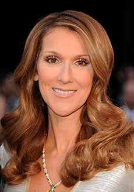
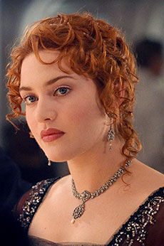

musique
james horner en 2010
James Horner, né le 14 août 1953 à Los Angeles et mort le 22 juin 2015 à Santa Barbara, est un compositeur de musiques de films américain d'origine austro-hongroise. La chanson My Heart Will Go On, composée pour le film Titanic et interprêtée par Céline Dion lui a valu deux Oscars, un Golden Globe et un Grammy Awards.
celine dion en 2011
Céline Dion, née le 30 mars 1968 à Charlemagne (Canada), est une chanteuse canadienne. Elle a représenté la Suisse et a remporté l'Eurovision en 1988 avec son titre Ne Partez Pas Sans Moi. Elle est également l'interprète de la chanson My Heart Will Go On, composée par James Horner pour le film Titanic. C'est une chanson qui parle d'un amour éternel, créée exclusivement pour le film.
cameron
james cameron, partenariat avec rolex, 2014
James Cameron, né le 16 août 1954 dans l'Ontario (Canada), est un réalisateur, scénariste et producteur de films canadien. Il a réalisé de grands films comme Titanic et Avatar. Grâce à Titanic, il reçoit en 1998 l'Oscar du meilleur film, ainsi que l'Oscar du meilleur réalisateur. Le film ayant pour budget 200 millions de dollars, receva neuf autres Oscars.
synopsis
Amour et drame mêlent cette histoire; Rose, une jeune et belle passagère de première classe, vit sous pression de part son fiancé Cal. C'est alors qu'elle rencontre Jack, un vagabond de troisième classe, embarqué sur le bateau à la dernière minute. Rose, pourtant réticente au début, accepte de faire sa connaissance. Ils passent de plus en plus de temps ensemble et tombent éperduement amoureux. Ni une ni moins, une puissante jalousie foudroie Cal et cet amour interdit devient en danger...
acteurs
leonardo dicaprio 1997
Leonardo DiCaprio, né le 11 novembre 1974 à Los Angeles, est un acteur, producteur, scénariste et documentariste américain d'origine italo-allemande. DiCaprio a joué dans plusieurs films notables comme Inception, The Revenant, Romeo & Juliette ainsi que Don't Look Up (2022). Il incarne le célèbre personnage Jack Dawson dans Titanic (1997) et devient dès lors une star mondialement connue. Aujourd'hui, il milite contre le réchauffement climatique et aide les associations de protection animalière.
kate winslet 1997
Kate Winslet, née le 5 octobre 1975 à Reading (Angleterre), est une actrice britannique d'origine irlando-suédoise. Kate Winslet a joué dans plusieurs films notables comme Divergente 1 & 2, Mind, The Reader, Steve Jobs ainsi que Les Noces Rebelles. Elle joue le rôle de Rose Dewitt Bukater dans Titanic (1997) et se voit attribués plusieurs Oscars et autres récompenses. Pour l'anecdote, elle est encore hantée par sa célèbre scène de nu, lors du dessin de Jack Dawson et du Coeur de l'Océan.